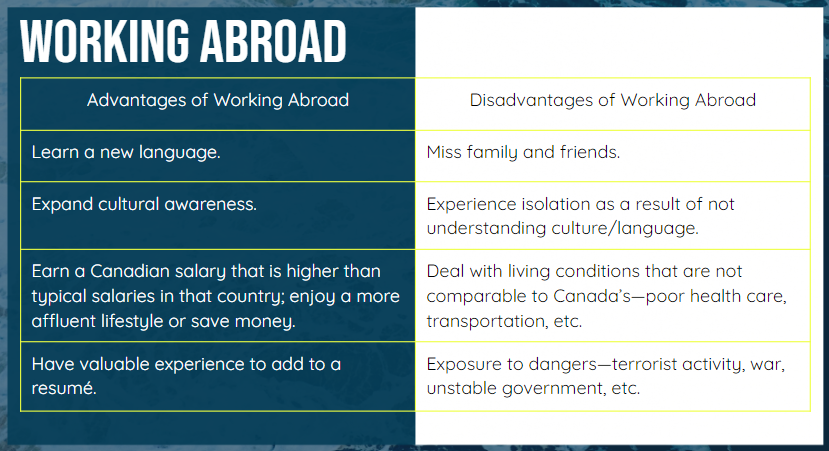

Working in International Markets
|
Global Issues A global issue is any issue (problem, risk) that adversely affects the global community and environment, possibly in a catastrophic way, including environmental issues, political crises, social issues, and economic crises. Solutions to global issues generally require cooperation among nations. |
Callout
The Decline of General Motors
- GM is known for producing large cars.
- As the price of oil rose, consumers wanted to avoid driving cars that used a lot of gasoline.
- Japanese automakers Toyota, Nissan, and Honda produced small, efficient vehicles.
- Set up plants in the United States; employees were not unionized, therefore labor was cheaper.
- During the financial crisis that began in 2008, consumers cut spending on gas-guzzling vehicles.
- GM filed for bankruptcy.
International Market: Mexico
- Since signing NAFTA, Canadian exports to Mexico have increased to a level seven times higher than pre-NAFTA levels.
- Mexico is ranked third in the value of its imports to Canada.
International Market: India
- Population of over one billion people.
- Top nation for outsourcing.
- Bangalore is known as the Silicon Valley of India because of the number of high-tech companies there.
- More of the population is entering the middle class, creating opportunities for Canadian products and services.
Callout
International Finance
- When people have jobs, they earn and spend money on products—houses, food, cars, etc.
- These expenditures lead to growth in the businesses that supply them, creating more jobs.
- This puts more money in workers’ wallets, encouraging them to buy more.
- The opposite happens during a recession.

Tabs
- The price of houses began to drop in 2007.
- Thousands of homeowners who had qualified for subprime mortgages could not keep up with payments and defaulted on their mortgages.
- Banks foreclosed on these homes, but because there was no market for them, these assets were worthless.
- Banks stopped lending and many went out of business.
- Without credit from banks, consumers stopped spending.
- Manufacturers and retailers began to lose money and lay off workers.
- The market fell and many people lost savings as pension plans and retirement savings plans decreased.
- Did not affect Canada as deeply as other countries.
- Canadian banks did not invest in subprime mortgages in Canada.
- Home prices here did not decrease as much as those in the United States.
- Canadian banks that had invested in U.S. banks were affected.
- Demand for Canadian goods, especially raw materials like oil and lumber, dropped.
- Organized labor has declined as a result of globalization and the financial crisis.
- Higher unemployment rates mean unions have less influence—workers will make salary and benefit concessions to keep their jobs.
- Many companies build factories in other countries where they can use cheaper, non-union labor.
Global Trends
A general development or change in a situation that affects many countries of the world.
Accordion
Fluctuating Oil Prices
- Oil is a commodity, and as such, it tends to see larger fluctuations in price than more stable investments, such as stocks and bonds.
- OPEC, or the Organization of Petroleum Exporting Countries, is the main influencer of fluctuations in oil prices.
- According to 2018 statistics, OPEC controls almost 80% of the world's supply of oil reserves.
- In the Spring of 2020, oil prices collapsed to historic and unprecedented lows.
- Reasons were given for this price anomaly:
- Lockdowns to fight the COVID-19 pandemic around the world decimated oil demand.
- A dispute between OPEC member Saudi Arabia and Russia (not an OPEC member) led to a flood of supply hitting the market.
- President Trump tried to broker a deal to cut production, but it was not implemented in time to prop up oil prices.
Climate Change & Carbon Pricing
- A price on carbon helps shift the burden for the damage back to those who are responsible for it, and who can reduce it.
- A carbon price gives an economic signal and polluters decide for themselves whether to discontinue their polluting activity, reduce emissions, or continue polluting and pay for it. In this way, the overall environmental goal is achieved in the most flexible and least-cost way to society.
Carbon pricing: Cap and Trade
- Caps the total level of greenhouse gas emissions and allows those industries with low emissions to sell their extra allowances to larger emitters.
- By creating supply and demand for emissions allowances, an ETS/cap and trade system establishes a market price for greenhouse gas emissions. The cap helps ensure that the required emission reductions will take place to keep the emitters (in aggregate) within their pre-allocated carbon budget.
International Labor
-
The International Labor Organization (ILO) is a United Nations (UN) agency.
- The goal of the International Labor Organization (ILO) is to advance social and economic justice by setting international labor standards.
Automation & Disruption of Retail
- Automation could yet again change the way consumers shop, and the way consumer goods companies sell.
- Some believe the day will come when shopping is fully automated, with smart devices and predictive data analytics deciding what goods are shipped where and when.
- Amazon, along with a number of start-ups and some big FMCG companies and retailers are at the forefront.
Income distribution: Universal basic income
- Universal basic income (UBI) is a government program in which every adult citizen receives a set amount of money on a regular basis.
- The goals of a basic income system are to alleviate poverty and replace other need-based social programs that potentially require greater bureaucratic involvement.
Income distribution: Increasing minimum wage
- Despite efforts to raise the minimum wage, no bill has successfully passed both chambers of Congress.
- Proponents of raising minimum wages argue that changes are needed to help incomes keep pace with increasing costs of living, and a higher minimum wage will lift millions out of poverty.
- Opponents of raising the minimum wage believe that higher wages could have several negative repercussions: leading to inflation, making companies less competitive, and resulting in job losses.
- Proponents of raising minimum wages argue that changes are needed to help incomes keep pace with increasing costs of living, and a higher minimum wage will lift millions out of poverty.
- Opponents of raising the minimum wage believe that higher wages could have several negative repercussions: leading to inflation, making companies less competitive, and resulting in job losses.
Augmented Reality: Business & Consumer Products
- One way augmented reality is used in business is 3D modeling. This is often used during the design process for items such as homes and cars.
- It can also be beneficial for training. Companies such as Walmart and Chipotle use AR to train employees. This gives them a hands-on training experience without the risk of costly real-world mistakes.
-
For retail businesses, AR offers a way for customers to try products before they buy. For example, Sephora has an app that lets customers see how their makeup products will look, and Wayfair uses AR to show customers how furniture will look in their homes.
Augmented reality: Heads-up display
- Augmented reality (AR) is a developing area, attracting growing interest in its ability to “tear down the barrier” between our day-to-day physical surroundings and the internet by overlaying digital objects onto the world around us.
- Combined with existing holographic head-up (HUD) technology, our cars of tomorrow could feature this functionality, overlaying directions onto the road in front of us or indicating if we’re driving too close to a vehicle with a color-coded strip.
Callout
The Global Traveler
Passport: An official document issued by a government certifying the holder’s identity and citizenship, and entitling the holder to travel under its protection to and from foreign countries.
VISA: A certificate issued by a country an individual wishes to visit that indicates that the department of immigration in that country has checked the individual’s credentials and given him or her permission to visit their country temporarily for a specified purpose. Types of visas :
- Tourist visa
- Residence visa
- Work visa
Restricted Goods
- Firearms, tobacco, and alcohol are the most commonly restricted items.
- Travelers are often not permitted to enter a country with large amounts of cash, fresh fruits and vegetables, and live animals.
- Returning Canadians must declare what they have purchased while away.
- Duty-free items are non-restricted items made within the borders of a country that has signed a free trade agreement with Canada.
